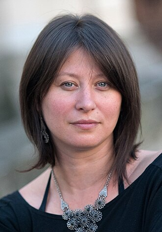
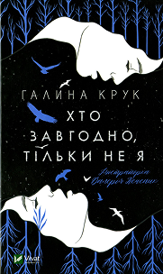
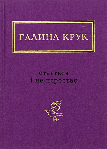
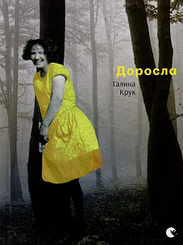
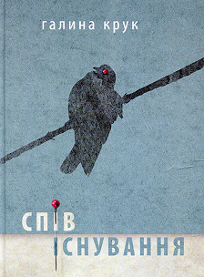

Гали́на Григо́рівна Крук (нар. 30 листопада 1974, Львів) — українська поетка, літературознавчиня, перекладачка. Членкиня Асоціації українських письменників (2001) та Українського ПЕН. Переможниця Літературної премії імені Богдана-Ігоря Антонича «Привітання життя» (1997), лауреатка премії «Гранослов» (1997) та видавництва «Смолоскип» (1997).
Авторка поетичних збірок «Мандри у пошуках дому» (Львів, 1997), «Сліди на піску» (Київ, 1997), «Обличчя поза світлиною» (Київ, 2005) та «Спів/існування» (Львів, 2013), а також численних публікацій у літературній періодиці. Поетичні та прозові твори ввійшли до альманахів і антологій — «Привітання життя'95» (1996), «Протизначення» (2001), «Королівський ліс» (2001), «Потяг'76: вибране 2003—2004» (2005), «Ми і Вона» (2005), «Українські літературні школи та групи 60 — 90 рр. XX ст.» (2009), «Сновиди» (2010), «Метаморфози» (2011) та ін.; перекладалися англійською, німецькою, шведською, російською, польською, литовською, сербською, хорватською, португальською, вірменською та іншими мовами.




